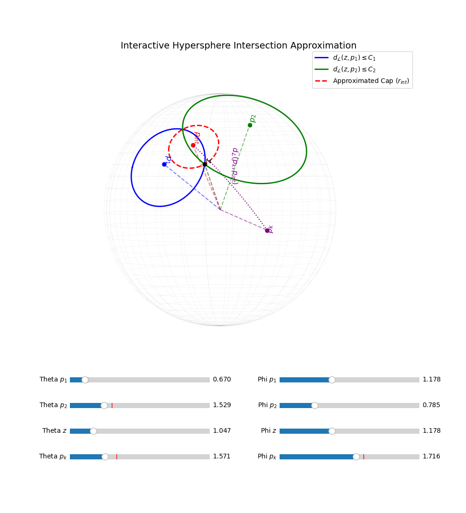
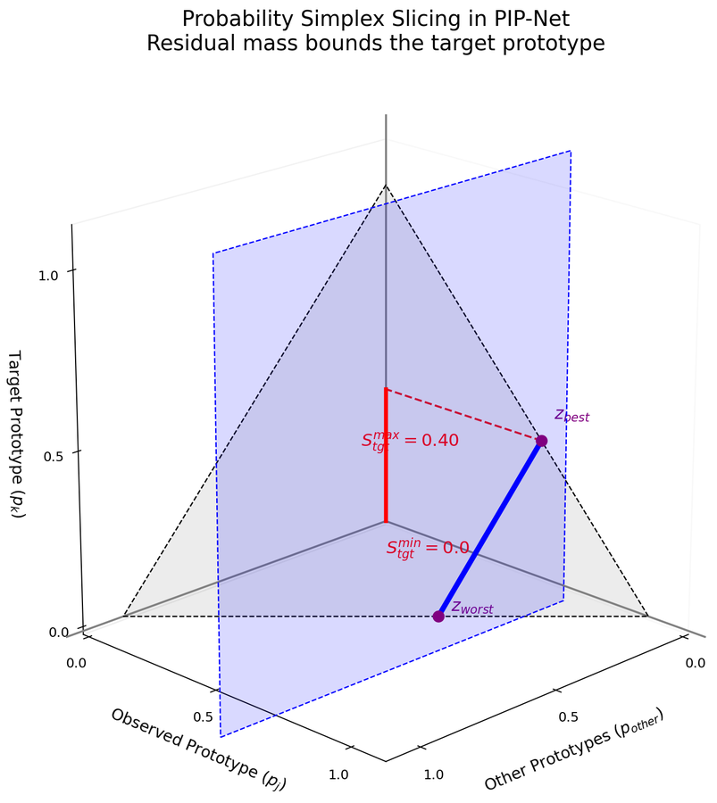
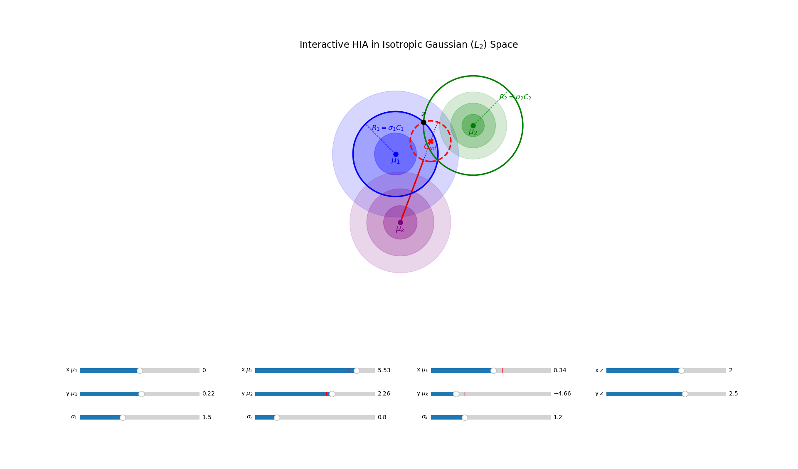

Abstract
Prototype-based neural networks are hailed as interpretable-by-design architectures. Recently, Abductive Latent Explanations (ALE) were introduced to provide formal, mathematically guaranteed explanations that leverage the intrinsic structure of these networks to ensure both predictive safety and human readability. ALEs rely on computing tight bounds on latent space distances to produce formal explanations.
However, existing ALE formulations are rigidly confined to Euclidean latent spaces. This leaves a critical gap: modern state-of-the-art architectures increasingly rely on non-Euclidean representations — spherical metrics, Gaussian densities, and dimensional projections — rendering current formal explanation methods incompatible. In this work, we generalize the ALE framework to support non-Euclidean prototype architectures.
For each geometric variant, we systematically derive how to either map the architecture to existing bounds or construct novel, architecture-specific bounding algorithms. We validate our theoretical constructions by computing subset-minimal formal explanations on fully trained image classifiers. By unifying these diverse models under a single formal framework, we enable the first rigorous, cross-architecture comparison of their interpretability.
Where Architectures Diverge from ProtoPNet
Every prototypical-parts network shares the same skeleton: an encoder turns an image into latent patches, each patch is compared to a set of learned prototypes, the per-patch scores are pooled into one activation per prototype, and a linear decision layer turns those activations into class logits. Architectures diverge in exactly three places along this pipeline — click the arrows (or dots) below to see what changes at each one.
1. Distance Function
How "closeness" between a latent patch and a prototype is first measured, before any conversion to a bounded score.
| Variant | Formula | Visual | Used by |
|---|---|---|---|
| Euclidean ($L_2$) | $d(z_l,p_j) = \|z_l-p_j\|_2$ | ProtoPNet, ProtoPool, ProtoGMM, MGProto, ProtoPFormer | |
| Cosine / spherical | $d(z_l,p_j) = z_l \cdot p_j$ | TesNet, Deformable ProtoPNet, PIP-Net, HyperPG, NonParam | |
| Gaussian | $\mathcal{N}(\mu_j,\sigma_j^2 I)$ | Isotropic Gaussian ProtoPNet (ours) |
Why not the raw log-likelihood? For the Gaussian variant, we bound distances by mapping back to the equivalent Euclidean radius (Sec. 4.4) instead of working directly with the negative log-likelihood — the Euclidean form keeps training smooth and fully differentiable.
2. Distance-to-Similarity Function
How a raw distance $d$ is converted into a bounded similarity score $\text{sim} = \sigma(d)$.
| Variant | Formula | Shape |
|---|---|---|
| ProtoPNet log-ratio | $\sigma(d) = \log\!\big(\frac{d^2+1}{d^2+\epsilon}\big)$ | |
| Cosine (identity) | $\sigma = \text{id}$, no transform | |
| Gaussian density | $S(d) = -\tfrac12 d^2 - \log Z$ |
3. Pooling Function
How per-patch similarities are aggregated into one activation $a_j$ per prototype.
| Variant | Formula | Visual |
|---|---|---|
| Max pooling | $a_j = \max_{l\in L} \text{sim}(z_l,p_j)$ | |
| Focal pooling (ProtoPool) | $a_j = \max_{l\in L}\text{sim} - \mathbb{E}_{l\in L}[\text{sim}]$ |
Focal pooling subtracts the average activation from the max, suppressing prototypes that fire uniformly across background patches.
Geometric Bounding Mechanisms
The original ALE framework bounds a latent patch's location using intersections of Euclidean hyperspheres. We show that a similar principle — shrink the set of locations consistent with known prototypes down to a single, tighter region — carries over to three very different geometries. Use the arrows (or dots) below to cycle through them.
Spherical Cap Intersection (Cosine Similarity)
Architectures such as TesNet use cosine similarity, i.e., a dot product on the unit hypersphere. Cosine similarity is not a distance metric, but the geodesic angular distance $d_\angle(x,y) = \arccos(x \cdot y)$ is. We approximate the intersection of two "spherical caps" around known prototypes by a single minimal-radius bounding cap $(\mathbf{p}_{int}, r_{int})$, which provably shrinks every time a new prototype is added:
$$ \underline{\text{sim}}_{\mathcal{E}}(z_l,p_k) = \cos\!\Big(\min\big(\pi,\ d_\angle(p_k,\mathbf{p}_{int})+r_{int}\big)\Big) $$ $$ \overline{\text{sim}}_{\mathcal{E}}(z_l,p_k) = \cos\!\Big(d_\angle(p_k,\mathbf{p}_{int})-r_{int}\Big) $$
Figure 1: Two spherical caps (blue, green), each centered on a known prototype with radius equal to its distance to the latent patch $z_l$, are bounded by a single tighter cap (dashed red), giving tighter bounds on the angular distance to any other prototype $p_k$.
Simplex Mass Conservation (PIP-Net)
PIP-Net maps patch/prototype similarities through a softmax, so they live on a probability simplex ($\sum_j \text{sim}(z_l,p_j) = 1$) rather than a metric space — there is nothing to take a distance between. Adding a known $\langle z_l,p_j\rangle$ pair to the explanation instead "consumes" a slice of that probability mass, which directly caps every other prototype's similarity for that patch:
$$ \overline{\text{sim}}_{\mathcal{E}}(z_l,p_k) = 1 - \sum_{\langle z_l,p_j\rangle \in \mathcal{E}} \text{sim}(z_l,p_j) $$Across the whole image, this residual mass gives a hard global ceiling on any unseen prototype's activation:
$$ \overline{a}_k \ \le\ \max_{l}\left(1 - \sum_{\langle z_l,p_j\rangle \in \mathcal{E}} \text{sim}(z_l,p_j)\right) $$
Figure: Cutting the probability simplex at the observed similarity $s_j$ (blue plane) restricts the target prototype $p_k$ to the segment between $z_{best}$ and $z_{worst}$, bounding its similarity between $0$ and $S_{tgt}^{max}$.
Gaussian Hypersphere Intersection
Gaussian prototype networks (e.g., an Isotropic Gaussian ProtoPNet) replace distance with a negative log-likelihood. Since any valid similarity function $S$ is a strictly monotonic transform of an underlying Euclidean distance, we invert it back to a true radius, apply the existing Hypersphere Intersection Approximation, then map the tightened bound back into activation space:
$$ d_{\text{Euclid}}(z_l,\mu_j) = \sigma_j\, S^{-1}\big(\text{sim}(z_l,p_j)\big) $$ $$ \overline{\text{sim}}_{\mathcal{E}}(z_l,p_k) = S\big(\underline{d}_{\Sigma_k}\big), \qquad \underline{\text{sim}}_{\mathcal{E}}(z_l,p_k) = S\big(\overline{d}_{\Sigma_k}\big) $$
Figure 2: Each prototype $\mu_j$ is defined by its anchor and variance $\sigma_j$ (shaded layer). The red dotted circle is the hypersphere approximating the intersection of the two Gaussian "uncertainty regions" in Euclidean metric space.
Generalizing Beyond Euclidean Geometry
Modern prototype-part networks have quietly diverged from ProtoPNet's original Euclidean, max-pooled formulation: some switch similarity function (cosine instead of $L_2$), some model prototypes as Gaussian distributions rather than point-vectors, and some replace max-pooling with focal pooling or a softmax-based probability simplex. Each variant breaks a different assumption the original ALE bounds relied on. We systematically walk through each axis of variation below and derive a sound bounding mechanism for it — either by mapping it back to an existing paradigm (e.g., Gaussian → Euclidean) or by deriving a new one from scratch (e.g., cosine → spherical caps, softmax → simplex mass conservation, focal pooling → aggregate statistics over spatial bounds).
| Architecture | Similarity | Gaussian | Pooling |
|---|---|---|---|
| ProtoPNet | Euclidean | × | Max |
| ProtoPool | Euclidean | × | Focal |
| TesNet | Cosine | × | Max |
| Deformable ProtoPNet | Cosine | × | Max |
| PIP-Net | Cosine⋆ | × | Max |
| ProtoGMM | Euclidean | ✓ | Max |
| MGProto | Euclidean | ✓ | Max |
| HyperPG | Cosine | ✓ | Max |
| ProtoPFormer | Euclidean | ✓ | Max |
| NonParam | Cosine | × | Max |
⋆ Special case: involves dimensional projection (softmax over the prototype simplex).
Experimental Results
We trained a ProtoPNet, PIP-Net, TesNet, and Isotropic Gaussian ProtoPNet (plus ProtoPool on CUB200) using the CaBRNet library, and computed subset-minimal ALEs for every applicable paradigm on three fine-grained datasets: Oxford Flowers 102, Oxford IIIT Pets, and CUB200 — select a dataset below to see its table. For each architecture, bold marks the best (smallest) result among its own ALE paradigms, and the overall best per column is additionally underlined. PIP-Net's non-negative, sparse decision head consistently yields the smallest and fastest explanations across all three datasets, while Gaussian and cosine-based spatial paradigms (Scaled/Spherical HIA) tighten the relative bound at the cost of runtime — and time out entirely on CUB-200, exposing a scalability limit as the number of classes grows.
| Architecture | Acc. (%) | ALE | Abs. Size | Rel. Size (%) | Time (s) |
|---|---|---|---|---|---|
| ProtoPNet | 82.8 | Top-k | 199 ± 254 | 19.5 ± 24.9 | 0.327 ± 0.406 |
| TI | 5273 ± 6075 | 32.3 ± 37.2 | 60.434 ± 61.289 | ||
| HIA | 675 ± 361 | 4.1 ± 2.2 | 11.781 ± 13.676 | ||
| PIP-Net | 80.5 | Top-k | 135 ± 29 | 17.6 ± 3.8 | 1.229 ± 1.413 |
| Sparse | 103 ± 55 | 13.5 ± 7.2 | 0.075 ± 0.089 | ||
| Simplex | 250 ± 103 | 0.2 ± 0.1 | 0.286 ± 0.069 | ||
| TesNet | 81.9 | Top-k | 295 ± 166 | 28.9 ± 16.3 | 0.341 ± 0.224 |
| Cosine TI | 10438 ± 2862 | 64.0 ± 17.5 | 202.580 ± 64.435 | ||
| Spherical HIA | 187 ± 51 | 1.1 ± 0.3 | 4.491 ± 2.827 | ||
| Gaussian | 72.8 | Top-k | 257 ± 237 | 25.2 ± 23.2 | 0.651 ± 0.563 |
| Scaled TI | 1022 ± 2035 | 6.3 ± 12.5 | 20.490 ± 44.649 | ||
| Scaled HIA | 931 ± 1770 | 5.7 ± 10.8 | 157.373 ± 312.566 |
| Architecture | Acc. (%) | ALE | Abs. Size | Rel. Size (%) | Time (s) |
|---|---|---|---|---|---|
| ProtoPNet | 89.3 | Top-k | 99 ± 72 | 26.6 ± 19.4 | 0.101 ± 0.06 |
| TI | 7869 ± 6537 | 43.4 ± 36.1 | 105.805 ± 83.69 | ||
| HIA | 733 ± 204 | 4.0 ± 1.1 | 3.098 ± 1.49 | ||
| PIP-Net | 88.7 | Top-k | 131 ± 13 | 17.0 ± 1.7 | 1.586 ± 0.231 |
| Sparse | 30 ± 16 | 4.0 ± 2.0 | 0.076 ± 0.038 | ||
| Simplex | 190 ± 30 | 0.1 ± 0.0 | 0.252 ± 0.040 | ||
| TesNet | 93.2 | Top-k | 16 ± 18 | 4.4 ± 4.8 | 0.027 ± 0.011 |
| Cosine TI | 1750 ± 2149 | 9.7 ± 11.9 | 26.565 ± 41.140 | ||
| Spherical HIA | 578 ± 126 | 3.2 ± 0.7 | 68.798 ± 20.136 | ||
| Gaussian | 87.5 | Top-k | 63 ± 34 | 17.1 ± 9.2 | 0.156 ± 0.074 |
| Scaled TI | 1215 ± 1407 | 6.7 ± 7.8 | 14.256 ± 35.297 | ||
| Scaled HIA | 1126 ± 1327 | 6.2 ± 7.3 | 142.364 ± 254.248 |
| Architecture | Acc. (%) | ALE | Abs. Size | Rel. Size (%) | Time (s) |
|---|---|---|---|---|---|
| ProtoPNet | 83.9 | Top-k | 314 ± 218 | 15.7 ± 10.9 | 0.997 ± 0.732 |
| TI | 1950 ± 5860 | 2.0 ± 6.0 | 213.616 ± 666.449 | ||
| HIA | 1349 ± 3769 | 1.4 ± 3.8 | 2446.927 ± 11363.445 | ||
| ProtoPool | 82.5 | Top-k | 67 ± 44 | 30.5 ± 20.3 | 0.195 ± 0.111 |
| TI | 893 ± 522 | 45.5 ± 26.6 | 7.502 ± 3.505 | ||
| HIA | 272 ± 315 | 13.8 ± 16.1 | 7.666 ± 12.973 | ||
| PIP-Net | 82.7 | Top-k | 18 ± 38 | 2.3 ± 4.9 | 1.031 ± 0.910 |
| Sparse | 216 ± 111 | 28.1 ± 14.4 | 1.064 ± 1.025 | ||
| Simplex | 955 ± 339 | 0.2 ± 0.1 | 50.427 ± 28.036 | ||
| TesNet | 86.8 | Top-k | 58 ± 156 | 2.9 ± 7.8 | 2.078 ± 1.947 |
| Cosine TI | Timeout | ||||
| Spherical HIA | Timeout | ||||
| Gaussian | 81.4 | Top-k | 95 ± 211 | 4.7 ± 10.5 | 0.340 ± 0.510 |
| Scaled TI | Timeout | ||||
| Scaled HIA | Timeout | ||||
Both cosine-manifold and Gaussian spatial-constraint ALEs exceeded the computation time budget on CUB-200, mirroring the scalability limitation already observed as class count grows.
Framework
Our models were trained using CaBRNet (Case-Based Reasoning Network), an open-source library designed for developing and evaluating prototype-based models.
BibTeX
@inproceedings{Soria2026beyond,
title={Beyond $L_2$: Generalizing Abductive Latent Explanations to Diverse Prototype-Based Architectures},
author={Soria, Jules and Grastien, Alban and Xu-Darme, Romain and Girard-Satabin, Julien and Chihani, Zakaria and Cancila, Daniela},
booktitle={Machine Learning and Knowledge Discovery in Databases: European Conference, ECML PKDD 2026},
publisher={Springer},
year={2026}
}Acknowledgements
This publication was made possible by the use of the FactoryIA supercomputer, financially supported by the Ile-De-France Regional Council. This work was also supported by the SAIF project, funded by the "France 2030" government investment plan managed by the French National Research Agency, under the reference ANR-23-PEIA-0006.